← Back to Projects
05 • Retail + Destination
Souq Galleria Mall
A destination retail experience where regional memory meets contemporary lifestyle through shaded plazas, water, greenery and climate-controlled comfort.
RETAIL AS DISCOVERY
Design Narrative
Retail becomes memorable when movement feels like discovery, not circulation.
Rather than presenting retail as stacked shops, the project builds a journey of discovery: shaded thresholds, patterned screens, family leisure and a central social heart.
Souq memory reinterpreted as a contemporary retail street, central atrium and hospitality-grade arrival.
Mixed retail galleriaAnchor storesF&B terraceShaded arrival plazaFamily leisureCentral atrium
Strategic Lens — Retail Memory
How can a mall borrow the emotional memory of a souq without copying its form?
Turn retail circulation into a shaded sequence of thresholds, atria, plazas and social moments.
Patterned screens, anchor nodes, F&B terraces, water and shaded arrival create a hospitality-grade retail environment.
A contemporary retail street where regional memory supports premium dwell time.
The public realm becomes part of the commercial product, not space left between stores.
Curated Visual Gallery
Souq Galleria Mall
A visual sequence of architecture, atmosphere, movement and detail.

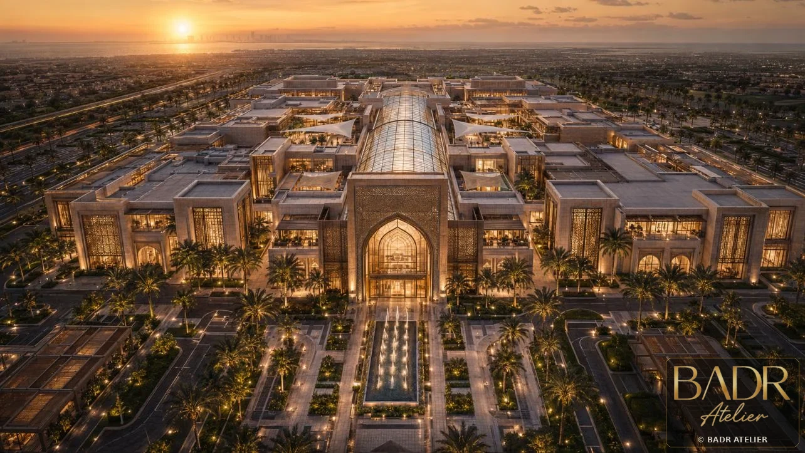
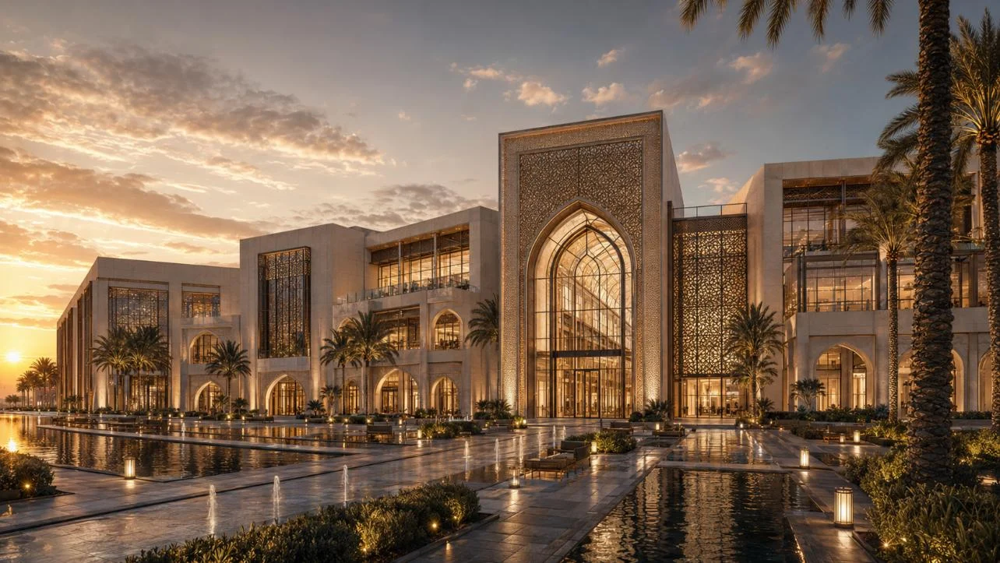
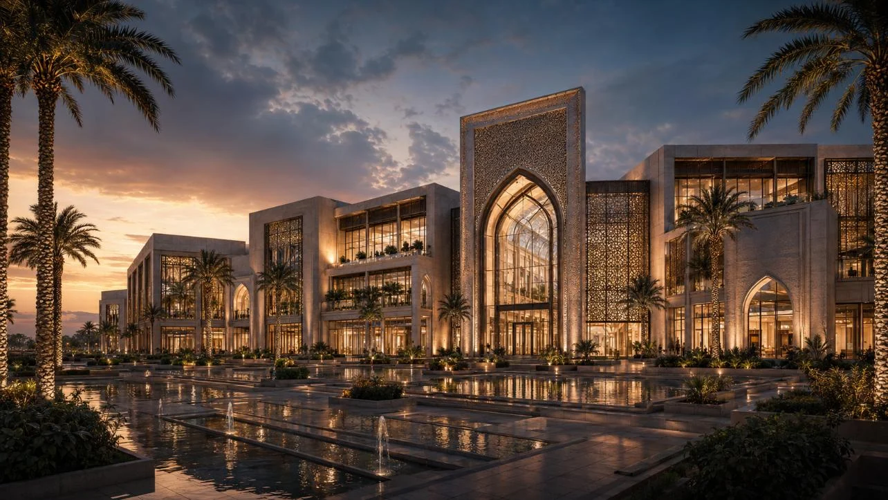
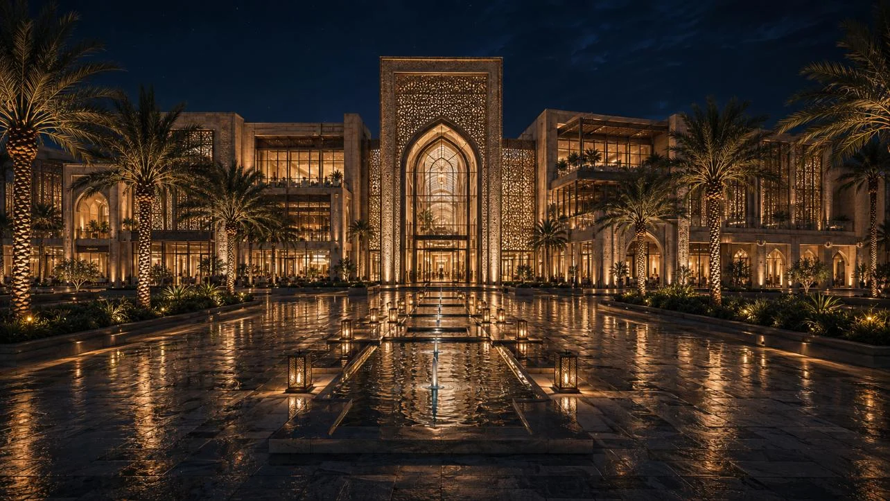
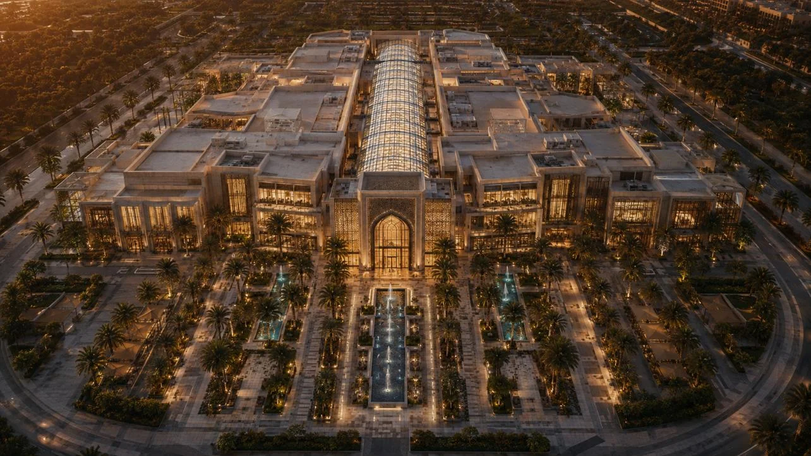
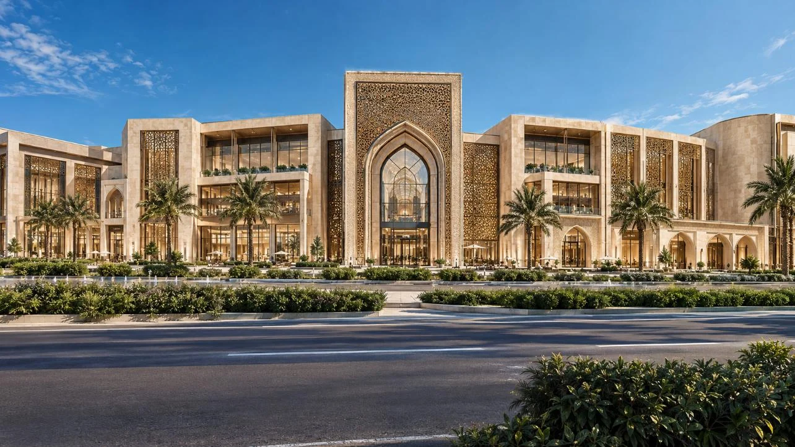
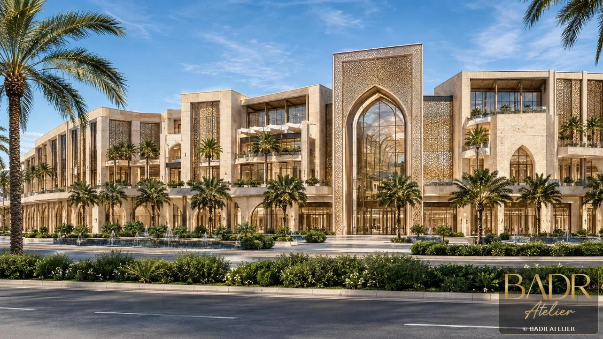
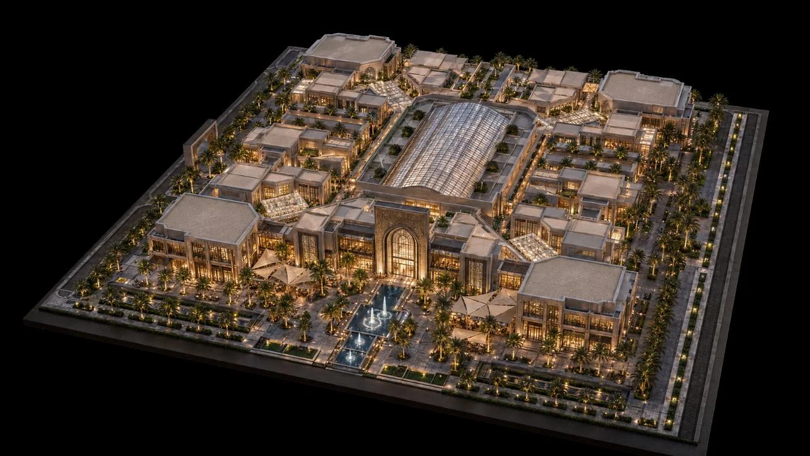
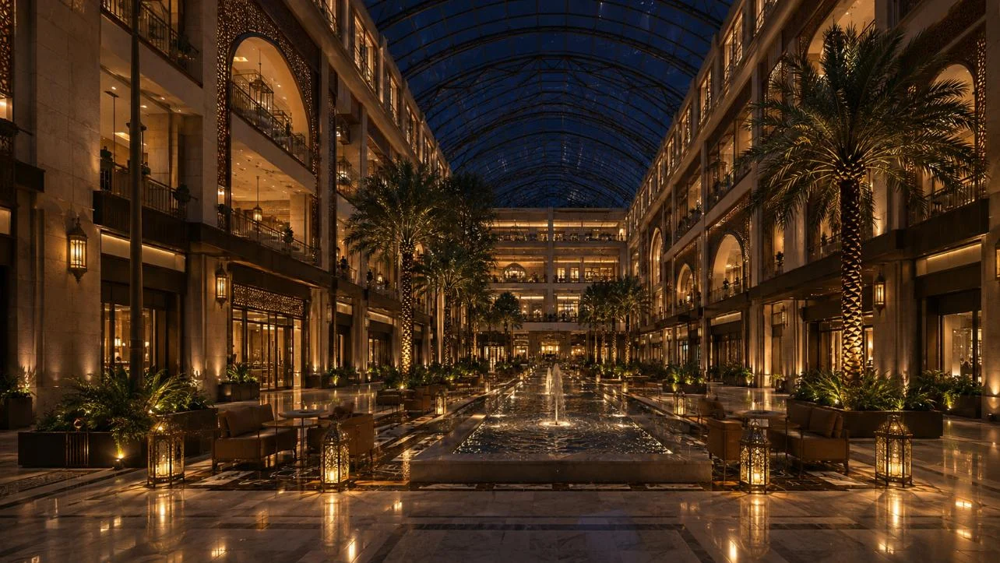
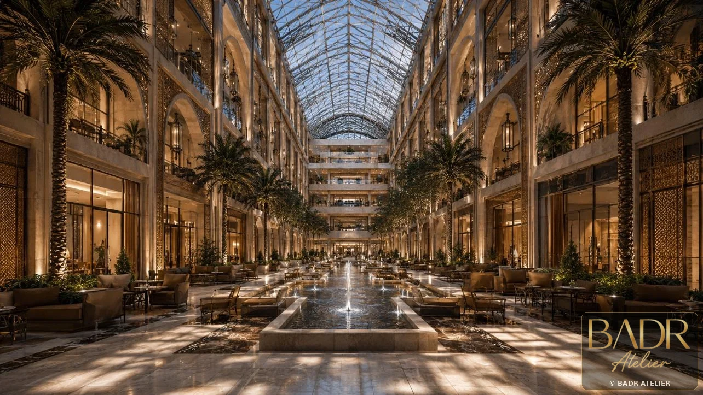
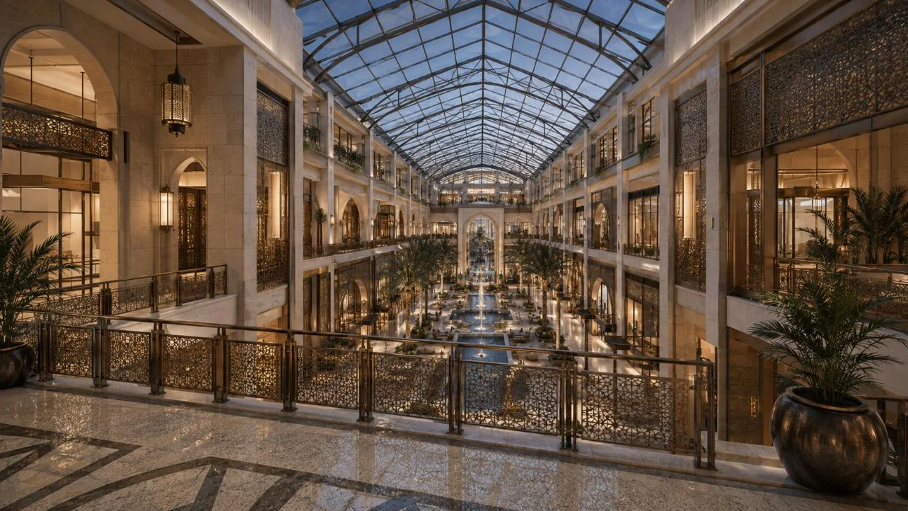
Key Features
- Mixed retail galleria
- Anchor stores
- F&B terrace
- Shaded arrival plaza
- Family leisure
- Central atrium
- Patterned metal screens
Spaces + Experiences
- Arrival plaza
- Retail streets
- Central atrium
- F&B terraces
- Family leisure zones
- Boutique lanes